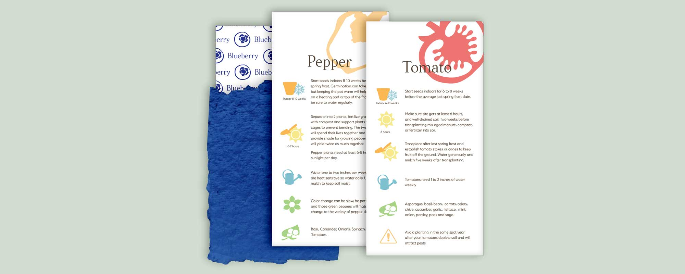
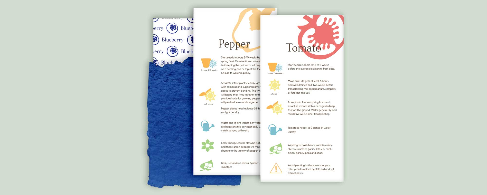
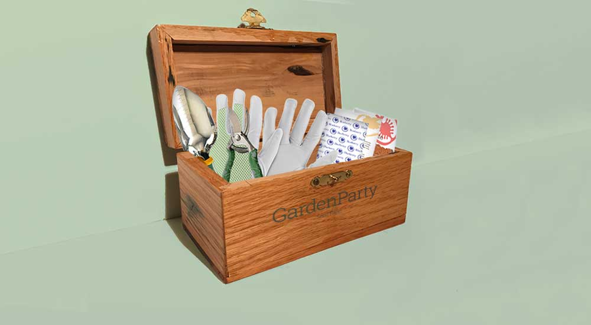
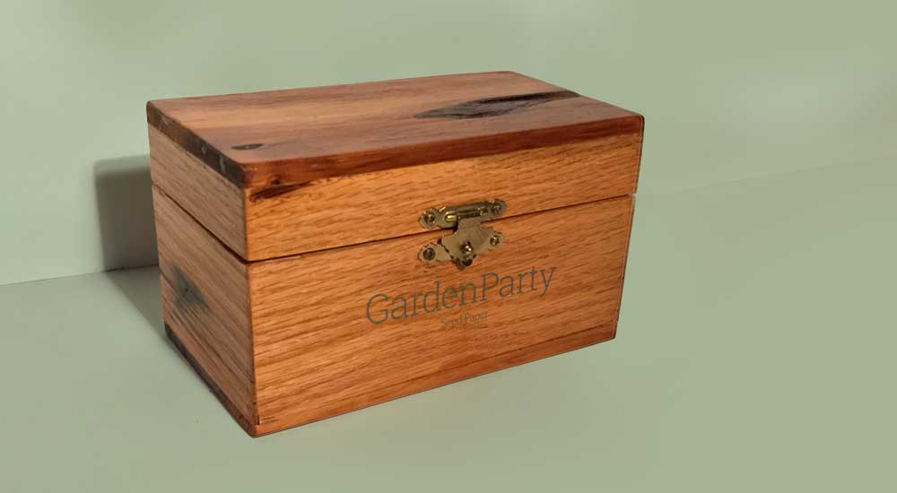
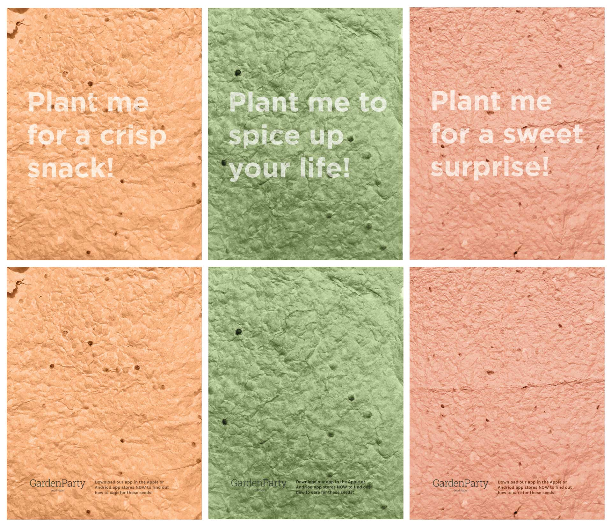
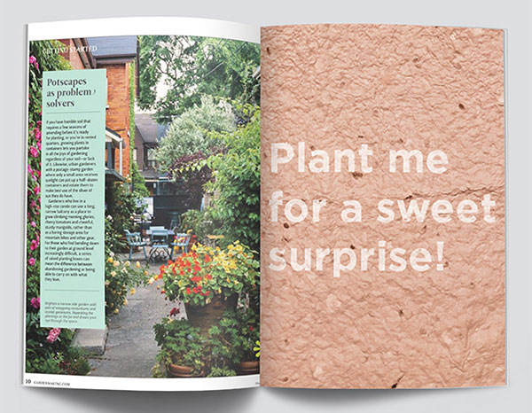
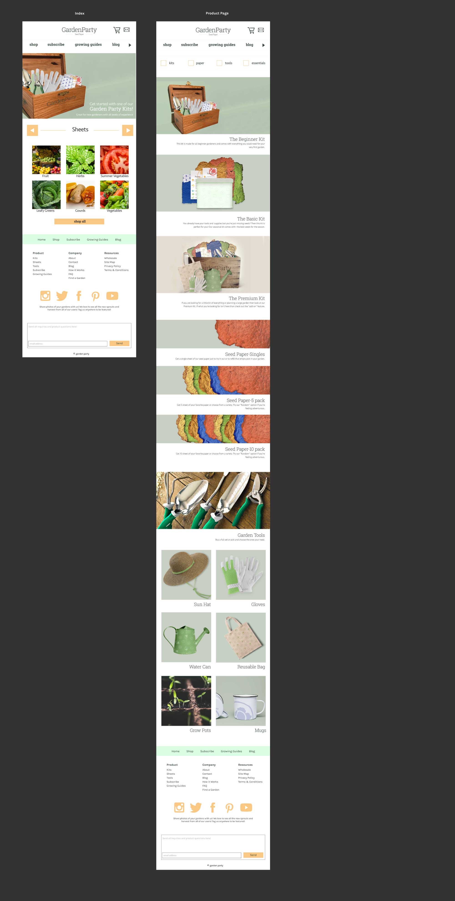
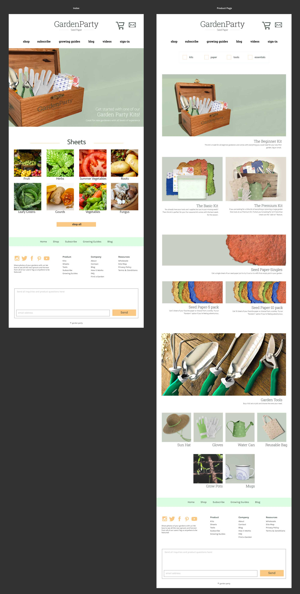

Garden Party – Seed Paper
A fictional company that takes the hassle out of dealing with seeds and wasteful packaging by combining the two into eco-friendly, biodegradable sheets.
Originating from a book design, Garden Party has evolved to suit the needs of all plant varieties as well as the gardener. Each sheet comes with an instructional guide tucked into a folded sheet which is color coded for quick identification.
Icon System
The icon system is used on all products and packaging to represent which seed it is that you are going to be using and caring for.
Package It
Grow Cards
Each grow card will come wrapped in a sheet of seed paper. These cards contain all of the information you will need to start your seeds.
 

The Box
Wooden box packaging is kept simple with only the logo printed across the front. This will be used to store your grow cards, any seed paper that has not been used as well as some small tools.
 Making Paper
How to Make Seed Paper
This is a short video of the process and the materials needed to make your seed paper sheet. Everything needed to recreate this process can be found around the house and at a low cost.
Other Touch Points
Gardening Supplies
Gardening tools and small home supplies will also be offered.
Advertising
Sheets of seed paper will be featured in gardening and home magazines to give consumers the opportunity to try before they buy. The name of the plant will be printed in soy ink along with a web address to find care instructions.
 Website
Wireframes
Web Mockups
The mobile and desktop designs remain relatively similar without any major content shifting. The Desktop uses extra columns to spread content out and use all available real estate.
 